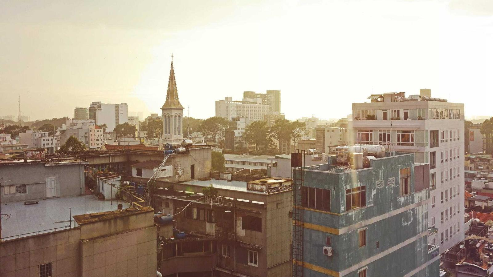

入口は保存後の確認モード。「保存」が「ストーリーズに共有」に変わり、タップで暗いスクリムの上に 9:16 のプレビューと背景の選択が出る。
画像の中身は確認モードと同じ語彙（縁取りタイトル / 白い縁の写真のスタック / 順位のステッカー / 名前の帯）を 1080×1920 に組み直したもの。
背景は既定で地図（ランキングの 3 地点が入る範囲、pitch 0）、ランキングの写真 / ライブラリの画像に差し替え可。画像は端末で 1080×1920 JPG に合成し、Sharing to Stories の専用経路（instagram-stories://share?source_application={FB App ID} + ペーストボード / content URI の背景画像）で渡す。現行の WdTimelinePost.share（OS 共有シート + テキスト）とは別物 — 共有シート経由ではストーリーズに画像が入る保証が無いため。ステッカーとしては渡さない（位置関係を崩さない）。Meta Developer Policy 2.6 によりロゴ・透かし・CTA・宣伝文言は画像に載せない。



「保存」→ 保存が済んだ瞬間に同じピルの中で文言が「ストーリーズに共有」+ icon_share へ（cross-fade 160ms）。「保存しました」= 白いステッカー 32、2 秒で消える。戻る = 作ったランキングの詳細へ（フローを閉じる）。
Instagram が未インストール（canLaunchUrl(instagram-stories://) が false）なら文言は「画像を共有」= OS の共有シートに画像ファイルを渡す（下の状態）。
スクリム 78% の上に プレビュー 270×480（= 1080×1920 の 1/4・r14・影）。中身は確認モードの行配置をそのまま縦長のカメラで再計算（1 位 880×495 / 2 位 720×405 / 3 位 560×315 @1080）。 安全域: 上下 250px（ピンクの破線は specimen だけ）にはタイトル・スタックを置かない。署名・ロゴ・透かしは載せない（Meta 2.6）。誰のランキングかは Instagram 側の投稿者で足りる。 背景の枡 60 r10: 地図（既定・選択 = 白 2.5 + チェック）/ ランキングの写真 3 枚（1 位 → 3 位の代表写真）/ ライブラリ（枡を叩く → OS の写真ピッカー）。 CTA = 白のピル 56「Instagram で開く」（スクリムの上なので白）。glass は無し（戻るも隠れる）。

ライブラリから選ぶと、末尾の枡がその画像に置き換わり選択状態に（もう一度叩くと再選択）。画像は 9:16 に cover（切り抜きの調整は無し = v1）。
地図以外の背景では地点の印・点線を出さない。スタックは幅の順（1 位 → 3 位）で中央に縦に並べ、行の間 24 @1080。上下に rgba(0,0,0,.35) → transparent の protection gradient を敷く（明るい写真でも白い縁取りが立つ）。
ランキングの写真を背景にしたときも同じ配置（1 位の写真が背景と重複するが、そのまま）。
生成中 — 「Instagram で開く」のラベルがスピナー 20 に。1080×1920 を端末で合成（地図は現在のカメラのスナップショット + 上に描き直したステッカー群 = 地図タイルの解像度に依存しない）。通常 1 秒未満。
Instagram 未インストール（canLaunchUrl(instagram-stories://) が false）— CTA が「画像を共有」= OS の共有シートに合成した JPG ファイルを渡す（現行のテキスト共有とは違い、ファイルそのものを渡す）。その上に「画像を保存」（写真ライブラリへ）の文字ボタン 44。入口 S1 の文言も同様に「画像を共有」。
完了 — Instagram へ遷移した後、アプリに戻ると共有面は閉じており、確認モードの上に白のトースト 48 が 3 秒。「もう一度」で共有面を再度開く（背景の選択は保持）。失敗（URL scheme 拒否・App ID 不備で Instagram 側が「対応していません」を出した場合）は同じトーストで「開けませんでした · 画像を共有」→ OS 共有シートへ。
- 入口は保存後の CTA を差し替えるだけ。ボタンを増やさない。未インストールなら「画像を保存」。
- 画像の中身は確認モードと同じ 4 つ（写真 / 重なり / 順位 / 名前）+ 署名のピル。1080×1920、上下 250 は空ける。
- 背景 = 地図が既定。地図のときだけ地点の印と点線が付く（位置関係に意味がある）。写真のときは中央の 3 行 + protection gradient。
- Instagram には背景画像として渡す（iOS: ペーストボード
com.instagram.sharedSticker.backgroundImage/ Android:content://のinteractive_asset_uriではなく background のIntent.setDataAndType）。ステッカー分離はしない = ユーザーが動かして配置が壊れるのを避ける。ストーリーズ上での加工は Instagram 側で。 - 画像に載せないもの（Meta 2.6）— ロゴ・透かし・「Toopdbq で作ろう」の類の CTA・宣伝文言。載せるのは本人の固有コンテンツ（タイトル・自分の写真・順位）だけ。
- 色は無し。ジャンル色も colorful グラデも使わない（確認モードと同じ方針）。CTA は暗いスクリムの上なので白のピル。
- Facebook App ID — 無いと Instagram 側で「このアプリはストーリーズ共有に対応していません」。
source_applicationに渡す。 - iOS —
Info.plistのLSApplicationQueriesSchemesにinstagram-storiesを追加（今はinstagramのみ）。背景 JPG はUIPasteboardにcom.instagram.sharedSticker.backgroundImageで置き、有効期限 5 分。 - Android —
FileProviderでcontent://URI を作り、com.instagram.share.ADD_TO_STORYの Intent にimage/jpeg+source_application、FLAG_GRANT_READ_URI_PERMISSION。 - メディア — JPG 1080×1920（最小 720×1280 を満たす・9:16）。動画背景は v1 では作らない（20 秒 / 50MB 制限と合成コストのため）。
- 合成 — 地図は MapLibre のスナップショット（1080×1920 相当のカメラ）、その上にステッカー群を Canvas /
RepaintBoundary.toImageで描く。既存のWdTimelinePost.share（テキスト + URL の OS 共有）はそのまま残し、ランキングの共有だけこの経路。